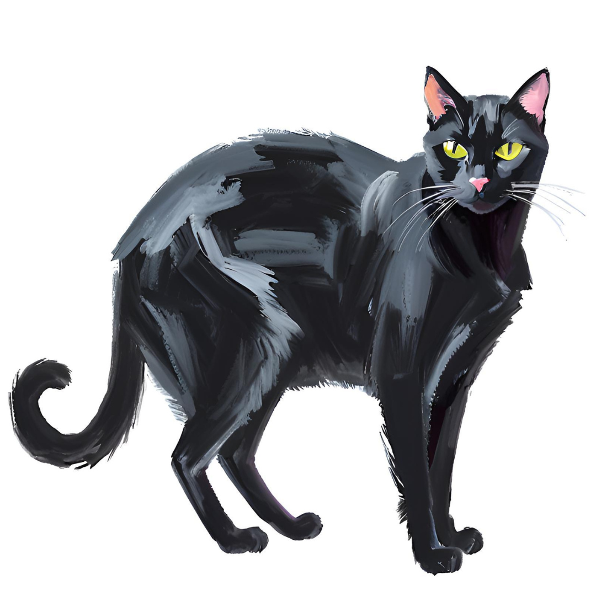
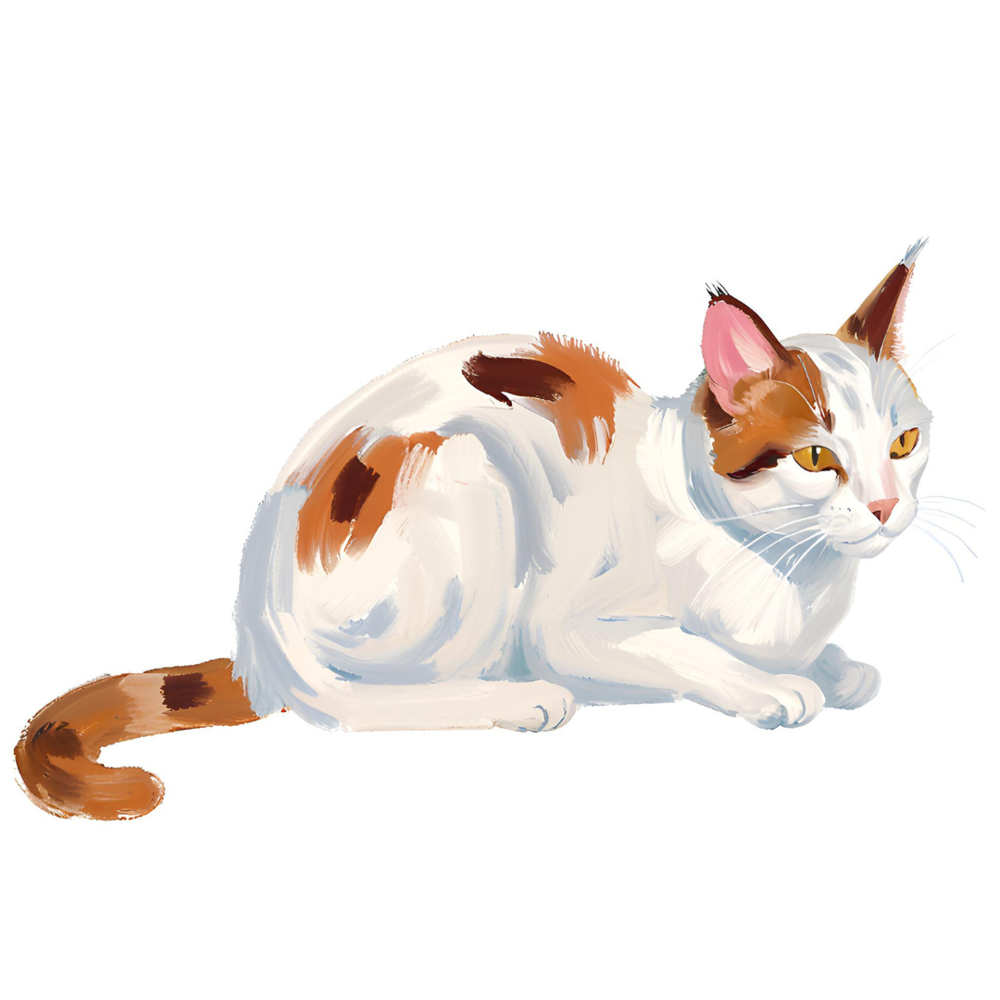
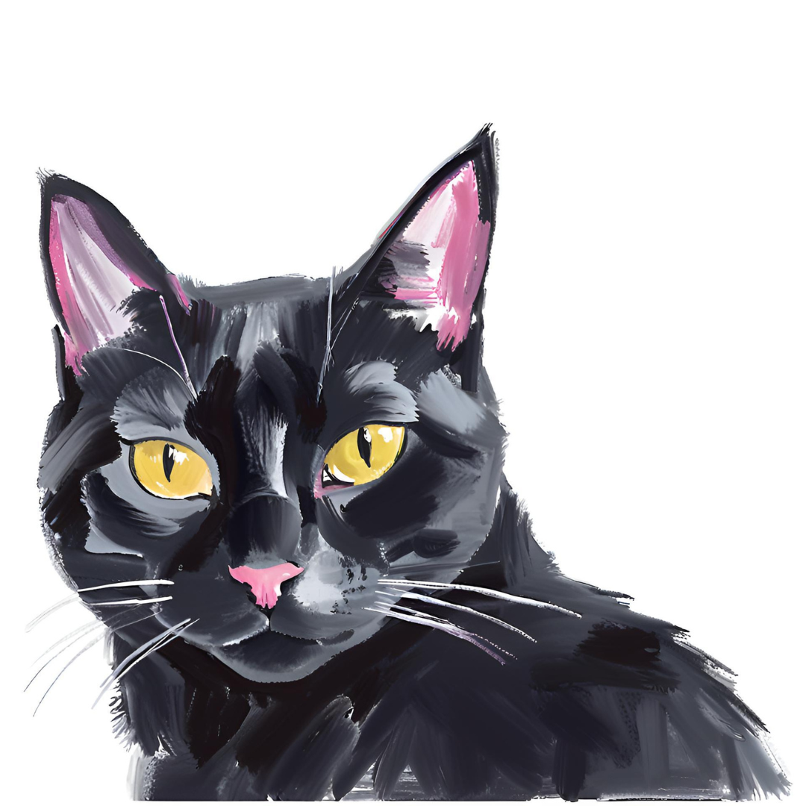
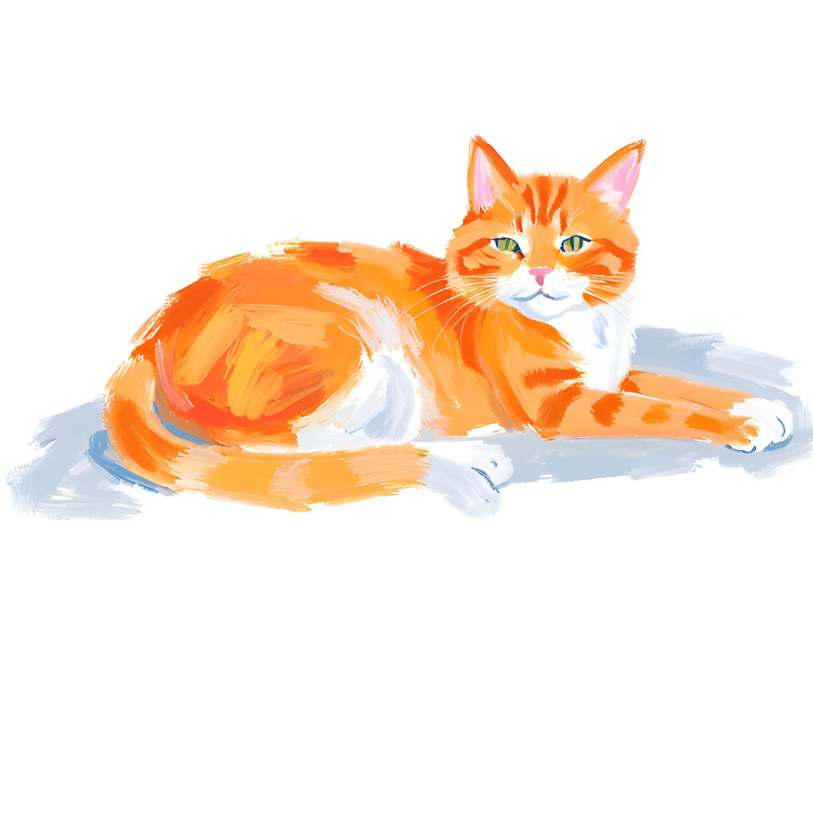
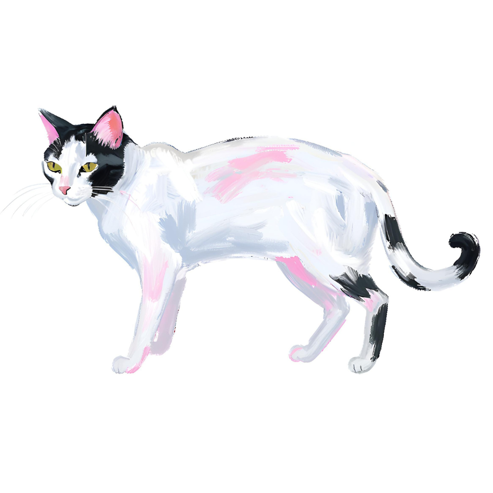

Mew is a delicate, soft-pawed cat, who moves like a whisper – unnoticed, and always just out of reach. Mew has mastered the art of disappearing. The moment a phone is raised, she vanishes. It’s not that she dislikes people — she enjoys the quiet company of students. But the moment she hears the click of a camera, she gives a disapproving meow and darts away, as if to say, “Not today.”
Some students have tried to befriend her, and while Mew appreciates the effort, she remains cautious. She'll accept the food, maybe even let you sit beside her, but the second you pull out a phone? She’s gone. Perhaps she, deep down, just enjoys being a mystery — one of NYUAD’s quietest residents. So, if you ever catch a fleeting glimpse of Mew, consider yourself lucky. But don’t reach for your camera. Just sit, be still, and maybe, she’ll decide to stay. 🖤✨

If you’re looking for a friend who fill your days with love, Luna is the one! This sweet cat is a people-lover, always ready to share warmth with everyone she meets.
Luna treats every person like an old friend, greeting them with soft purrs and head nudges. Whether you’re working at your desk, lounging on the couch, Luna will be right there, curling up beside you.
Her friendly nature makes her the perfect companion for anyone who wants a loving, social cat. Luna doesn’t just enjoy cuddles; she thrives on them! She’ll happily follow you around, eager to be part of your day and brighten your moments with her playful personality.
With her pretty eyes and affection, Luna turns any house into a home.
Ready to meet the most lovable kitty around? Luna can’t wait to snuggle with you!

Larry is a true icon, always ready for the spotlight. Confident and photogenic, she walks around campus like a runway model.
But fame isn’t easy when there’s competition, and Larry’s biggest rival is none other than Minnie! These two attention-loving stars are constantly battling for the main character position, each trying to outshine the other. Whether it’s posing for photos, lounging in the sunspot near D2, Larry makes sure she always looks flawless.
Despite their rivalry, Larry and Minnie share one thing in common: they both love being adored. If you ever spot Larry meowing for attention, compliment her, and trust us, she deserves them.
Bow down to Queen Larry—the forever star of NYUAD! 🌟🐈⬛✨

Orange is a food connoisseur, an expert in student snacks, and the inspector of all things edible. Every day, he has one mission in mind: to find the tastiest treats.
With a confident gaze, Orange approaches students with a demand — Where’s my food? He believes that sharing is caring, and nothing disappoints him more than empty hands. If a student have no snacks prepared for him, Orange will let out an exasperated sigh and complain about how NYUAD students are getting way too broke.
From cat food to late-night study snacks, he knows all the best meal spots on campus. But don’t think you can trick him with just any offering — Orange has refined taste.
So next time you see Orange staring at you with judgmental eyes, just know he’s disappointed. 🍕🐈✨
BENJAMIN
The Wise Philosopher🧘♂️🐾
While Minnie and Larry battle for the spotlight, Benjamin sits quietly. He is the philosopher who prefers solitude. Instead of chasing attention, Benjamin spends his days contemplating life, staring at the horizon.
To him, the rivalry between Minnie and Larry is just a meaningless pursuit. He throws at them a dry glance before returning to his meditations. Some say he was a great scholar in a past life.
But don’t mistake his aloofness for coldness. If a younger cat comes to him for advice, he might share a slow blink of approval.
A wanderer, a poet, a philosopher — Benjamin is not just a cat. He is a mystery wrapped in fur, forever lost in thought. 🌅🐈⬛✨
